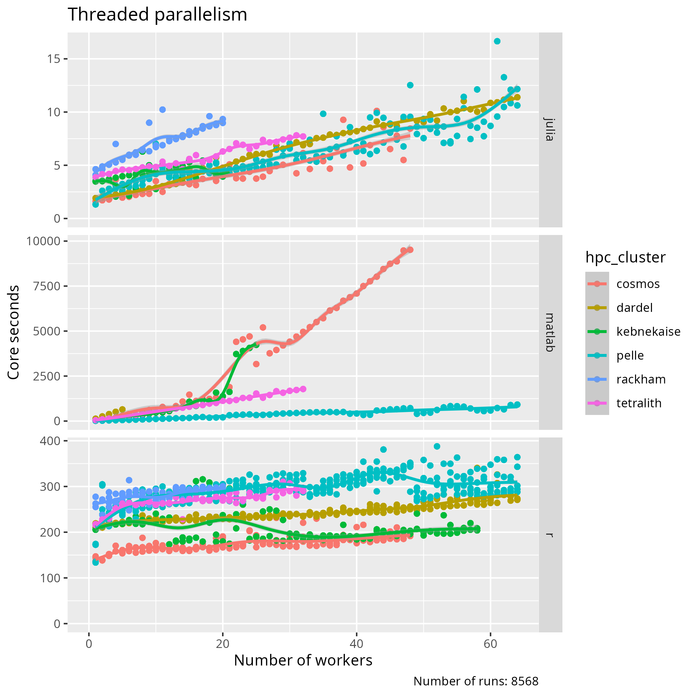
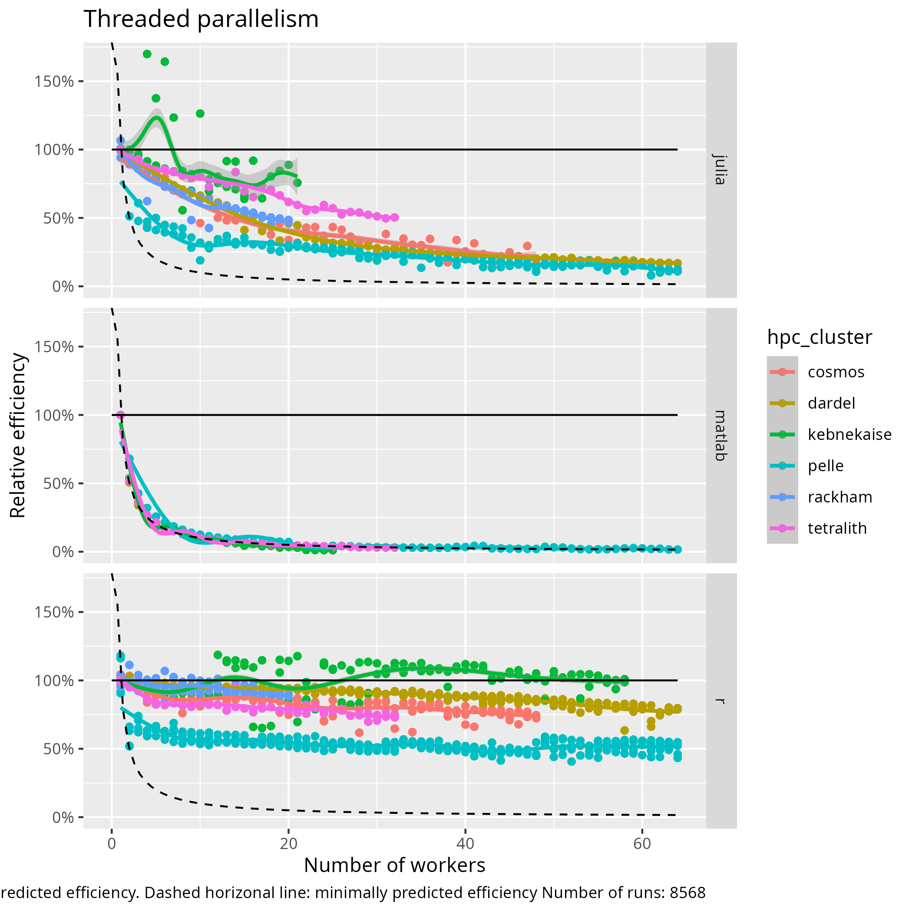
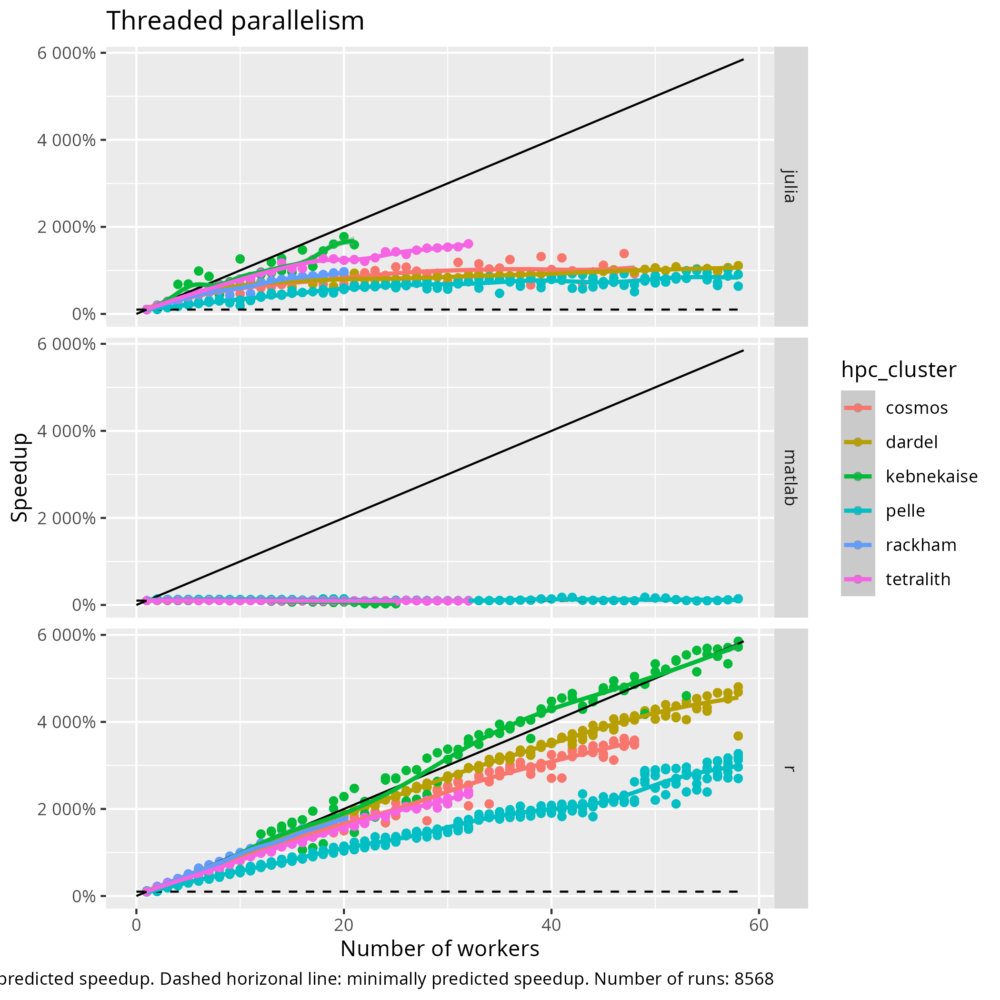

Summary advanced day¶
Parallel computing¶
flowchart TD
subgraph hpc_cluster[HPC cluster]
subgraph node_1[Node]
subgraph cpu_1_1[CPU]
core_1_1_1[Core]
end
end
end
Simplified HPC cluster architecture
| Extent | Parallelism |
|---|---|
| Core | Single-threaded |
| Node | Thread parallelism |
| HPC cluster | Distributed parallelism |
Types of parallelism, relevant to this courses

Amdahl’s law: the maximum speedup of code by parallelization is constrained by the code that cannot be run in parallel.
Thread parallelism¶
| Language | Keyword to indicate a parallel calculation |
|---|---|
| Julia | Threads.@threads |
| MATLAB | parfor |
| R | %dopar% |

Benchmark: the total core seconds per number of workers

Benchmark: Efficiency per number of workers

Benchmark: Speedup per number of workers
- Singlethreaded code makes the best use of your computational resources
- HPC clusters differ
- Languages differ
- MATLAB does not use multithreading at all: it shows how a misconfigured job looks like

- No need to learn a different ‘faster’ programming language,
as the variance within a programming
language is bigger than variance between
languages (adapted fig 2, from
[Prechelt, 2000]). Instead, get good in the one you already know
Distributed parallelism¶
Learning outcomes
- I can schedule jobs with distributed parallelism
- I know the basic difference between threads and distributed memory in terms of memory share
- I can explain how Julia/MATLAB/R code makes use of distributed parallelism
Summary
- Memory and processes are distributed among tasks
- Information sent between tasks only on demand
- Native packages
- own syntax and run with
-p - MATLAB
- own syntax and run with
- MPI external library
- MPI-like syntax and run with
mpirun -npcommand or similar.
- MPI-like syntax and run with
Big data¶
Learning outcomes
- I understand how I can work with big data
- I know where to find more information about big data
Summary
- There are packages for all languages
- Distributing parts of arrays
- “Lazy computing”
- Effective storage
- Different file formats suits diffeent types of data
- HDF5/NetCDF lets you load parts of the file into memory
- Allocating memory
- Allocate more cores
- Use Slurm commands
--mem=<size>GBor--mem-per-gpu=<size>GB
Introduction to GPUs¶
Learning outcomes
- I can explain the difference between a CPU and a GPU
- I can use GPUs with my language
Summary
- GPUs process simple functions rapidly, and are best suited for repetitive and highly-parallel computing tasks
- There are GPUs on NSC/Tetralith, PDC/Dardel, C3SE/Alvis, HPC2N/Kebnekaise, LUNARC/Cosmos, UPPMAX/Pelle, but they are different
- It varies between centres how you allocate a GPU
- You need to use either batch or interactive/OpenOnDemand to use GPUs
Machine Learning¶
Learning outcomes
- I can check if an ML package is installed with a module
- I can run ML code with my language
Summary
- ML approaches
- Supervised learning (with training examples)
- classification
- regression
- Unsupervised learning (find structures in data))
- clustering
- dimensionality reduction
- Reinforcement learning (take actions in different environment)
- real-time decisions
- game AIs
- Robot navigation
- Supervised learning (with training examples)
- When to use
- When tasks are too complex or dynamic for a traditional algorithm
- When you cannot define a set of rules to solve a problem, like image recognition and spam detection
- When you have tasks involving large amounts of unstructured data (images, audio, etc.)
- When you need to be able to easily adapt to new information over time